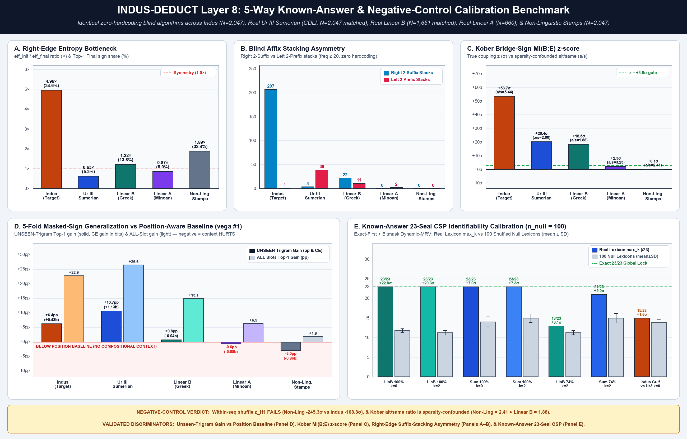
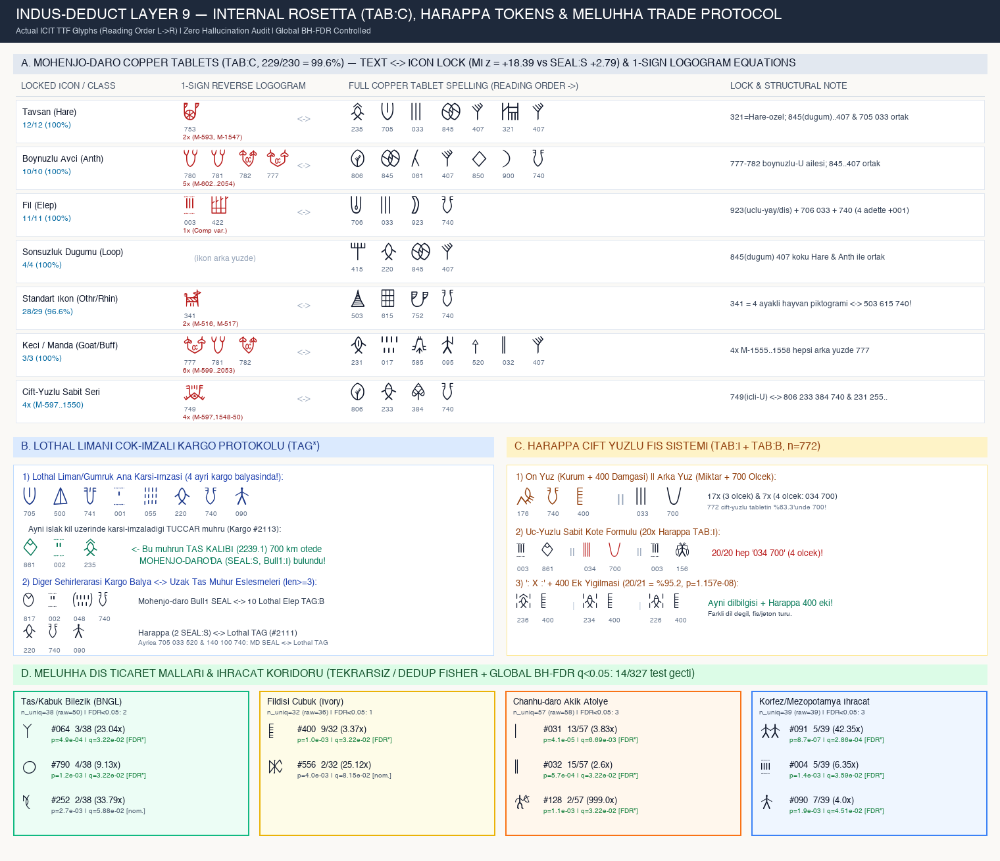
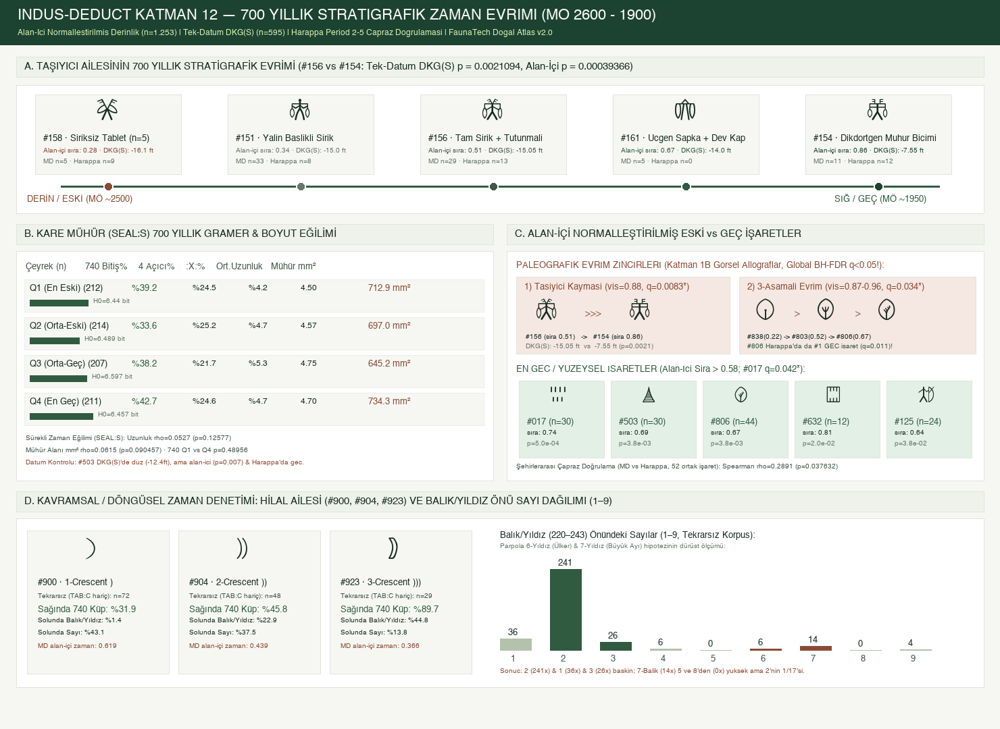

İndus Vadisi Yazısı İçin Kalibre Edilmiş Açık Benchmark
5.679 yazıt üzerinde görsel glif analizi, 5'li bilinen-cevap & dil-dışı kalibrasyon, Mohenjo-daro bakır tablet iç Rosettası, 700 yıllık paleografik evrim, Lothal çok-imzalı kargo ağı ve 690 kırık yazıtlık açık onarım kataloğu. Kanıtlanmış yapısal gerçekler ile kanıtlanmamış sesli okumalar kesin çizgiyle ayrılmıştır.
Katman 8: 5'li Kalibrasyon (Eşit Boyut & Uzunluk — N = 2.047)
İndus yazısının gerçek Sümer (Ur III CDLI), Linear B ve Linear A ile aynı kümeye oturup Dil-Dışı Damgalardan nasıl kesin ayrıştığı. z_H1 emekliye ayrıldı; 3 doğrulanmış ayırt edici öne çıktı.
| Korpus | z_H1 (Emekli) | Sağ-Kenar Daralma | 2-Ek Yığılması (Son:Ön) | Kober Köprü MI z | Görülmemiş Trigram Kazancı | final_UNSEEN |
|---|
23-Mühürlü Bilinen-Cevap (Known-Answer) Max-CSP Doğrulaması
Aynı çözücü kapalı Linear B ve Ur III Sümercede %100 kilit açarken, %74 açık sözlüklü gerçek Sümercede 0 çapayla gürültüye düşüp 2 çapayla (%68.2) çözülüyor — İndus Körfez duvarı algoritmik değil, fiziksel çapa eksikliği.
| 23-Mühürlü Graf Rejimi | Çapa (k) | En İyi Eşleşme | z-skoru | Doğru Kilitlenen | Karar |
|---|
5'li Kalibrasyon Görsel Özeti

Canlı İndus Glif Atlası (294 Sık İşaret = %95.7 Korpus Kapsamı)
Gerçek ICIT TTF yazı tipiyle canlı çizim. Alt çubuklar: Açıcı · Orta · Bitiş oranlarını gösterir.
Mohenjo-daro Bakır Tabletleri (TAB:C, 229/230) — İç Rosetta & H1 Reddi
Metin ↔ ikon kilidi +19.66σ (%96.2 saflık); 23 çift-yüzlü bakır tablette arka yüz hayvanı yerine tek bir İndus işareti konmuş. Katman 10 bu metinlerin yalın hayvan adı (H1) değil, bileşik ritüel/kurumsal formül (H2) olduğunu 4 bağımsız testle (4 dil ailesi kör fonetik null dahil) kanıtladı.
| Kilitli İkon | Saflık | Tek-İşaret Karşılığı | Tam Yazım (Okuma Yönü →) | Yapısal Not |
|---|
Çift İnsan #091 — En Güçlü İhracat & Kargo Başlığı
Tüm 5.679 yazıtta yalnızca 28 kez geçer; %0 bitiş, %82.1 açıcı/tekil. Tekrarsız olarak %45.0'ı (hamda %57.1) ihracat mührü, yuvarlak Körfez mührü veya kargo balyasında (11.89×, p = 1.48e-6; Körfez'de 42.35×, q = 2.86e-4).
Lothal Çok-İmzalı Kargo & Harappa Fiş Kilidi
26 çok-imzalı kil balyası (Lothal: 12, Dholavira: 6) ve 9 şehirlerarası kargo ↔ taş mühür bağlantısı. Lothal ana gümrük mührü 4 kargoda karşı-imza atıyor (biri 700 km ötedeki Mohenjo-daro taş mührü 861 002 235).
Harappa 772 çift-yüzlü fişi: Kurum ↔ sabit kota kilidi MI z = +9.55σ ve : X : + 400 ek yığılması 20/21 (%95.2, p = 1.16e-8).
Meluhha Dış Ticaret Malları (Çivi Yazısı Kayıtları & Tekrarsız BH-FDR)
| Ticari Mal | Sümerce / Akadca | İndus Kaynak / Arkeolojik İz | Etimoloji / Durum |
|---|
Katman 9 Görsel Glif Levhası (İç Rosetta, Lothal Kargo, Harappa Fişi & Ticaret)

Katman 11B: Sıkı Şehir-Dışarıda (LOCO) Hasarlı Yazıt Onarım Kıyaslaması
12 şehir dışarıda bırakılarak (sıfır sızıntı, sabit ön-ağırlıklar) 275 kenar + 10 iç kırık üzerinde görsel glif SVD + nesne-türü + nöral MLP hibrit motorunun saf n-gram ile kıyaslaması.
| LOCO Alt Kümesi | n | Pozisyon Tabanı | N-gram Top-1 / Top-5 | Nöral MLP Top-1 | Hibrit Motor Top-1 / Top-5 |
|---|
Açık Kırık Yazıt Onarım Kataloğu (690 Gerçek Hasarlı Yazıt · 25 Şehir)
Kırık (000) konumu Orman Çamı çerçevesiyle işaretlenmiş, en yüksek olasılıklı 5 aday gerçek İndus glifleriyle listelenmiştir.
| ID / Şehir / Tür | Kırık Dizi (En İyi Tamamlama Gösterili) | Top-5 Aday (Olasılık) | Güven |
|---|
İndus Dilinden Sonra Aynı Bölgede Hangi Dil Geldi? (MÖ 2600 → MÖ 300)
İndus Vadisi'nde (Saptasindhu) Harappa sonrası belgelenen ilk dil Erken Veda Sanskritçesidir (Rigveda) — ancak yerel Harappa sonrası nüfustan ~300–380 Hint-Avrupa-dışı kelime ve üstdamaksıl (retrofleks) sesleri devralmıştır.
Rigveda'daki İndus Sonrası Alt-Katman (Substrate) Fosilleri
| Kelime | Anlam | Harappa Bağlantısı |
|---|
Katman 11A: Yurt Dışı Kare vs Yuvarlak Mühür & DOF Tırmanışı
Yurt dışı Kare Harappa mühürleri (`n=12`) kendi 740 gramerini (%25) koruyup 090/091 hiç kullanmazken (`0/12`), Yuvarlak Körfez mühürleri (`n=17`) 740'ı yarıya düşürüp 090/091'e (11/17) geçer.
| Halka | Mühür (E) | Tekil İşaret (U) | DOF | Tekil % | 740 Bitiş | 091 / 090 |
|---|
İlk Nicel Paleografik Evrim Zincirleri (BH-FDR q < 0.05)
Mohenjo-daro alan-içi normalleştirilmiş derinlik (n=1.253) & tek-datum DKG(S) (n=595) ile Harappa Period 2→5 (Spearman rho = +0.289, p = 0.0376) çapraz doğrulaması:
Denizcilik (Kargo/Körfez) vs Irmak Başkentleri (Tabletler)
Tabletlerin %98.9'u iç nehir şehirlerinde (Harappa Gavi timsahı 62/66, Balık 47/47); gerçek açık-deniz lojistiği TAG* (%65.3) ve SEAL:C (~%66) üzerinde.
| Belge Türü | Deniz Kıyısı & Körfez | Aşağı İndus (MD) | İç Kara (Harappa vb.) |
|---|---|---|---|
| TAB:I (Minyatür) | 19 (%2.0) | 8 | 925 (%97.2) |
| TAB:B (Kabartma) | 5 (%0.5) | 150 | 946 (%85.4) |
| TAB:C (Bakır) | 0 (%0.0) | 229 (%99.6) | 1 |
| TAG* (Kargo Kil) | 171 (%65.3) | 29 | 56 |
| SEAL:C/CY (Yuvarlak) | 16 (+11 Körfez) | 9 | 5 |
4 Eksenli Hilal Merdiveni (#900 → #904 → #923, TAB:C Hariç Tekrarsız)
| İşaret | Görsel | n | Solunda Balık/Yıldız | Solunda Sayı | Sağında 740 Küp | MD Zaman Sırası |
|---|
Katman 12: 700 Yıllık Stratigrafik Zaman Evrimi Levhası
